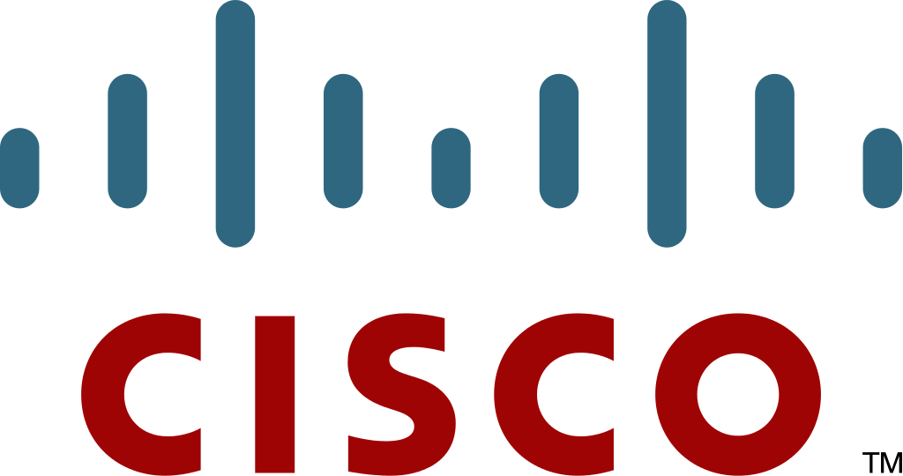

Professional Experience
Product Manager Technical
AWS Security Assurance
- Architected a human-in-the-loop oversight framework for AI-driven compliance automation — designed intervention as a calibrated control, not a catch-all, by tracking override rates, disagreement patterns, and error categories against explicit thresholds. The framework systematically reduces human intervention as model confidence grows, building auditable trust in autonomous operation for AWS's most security-sensitive customers.
- Built a context management system that auto-ingests product decisions, meeting notes, and Slack discussions into versioned, queryable skills — solving the context-freshness problem in agentic workflows. Live product knowledge is vended on-demand to engineering teams' AI agents via MCP, replacing stale documentation with a reliably current knowledge layer.
- Drove compliance automation that translates AWS security posture into auditable, regulator-ready evidence — reducing the manual burden on a 40+ person org across SWE, security, TPM, and compliance functions.
Software Development Engineer with Product Management Responsibilities
Applied AI - Amazon Worldwide Stores
- Secured a worldwide fulfillment-center shelf-recognition automation project — implemented the security and compliance posture required to ship, contributing to an $8.8MM YoY variable cost reduction. Managed service-level certifications for a 40+ person org, earning the internal "Mission Impossible" award for trust-building velocity.
- Owned the product cycle for Prime Air's data annotation tooling — ran discovery, prototyped in CV Annotation Tool and SageMaker Ground Truth, and validated with annotators to improve annotation throughput and quality.
- Developed a geocode verification prototype using AWS Bedrock Agents that mirrors auditor workflows by integrating external APIs (Bing, ESRI, HereMaps) for Last Mile Analytics; initial phase achieved 96% accuracy and 86% recall on curated ground-truth data.
- Co-led the product launch of SmartSifting, a training accelerator library that cut model training costs by up to 35% — drove the external narrative through whitepapers and incorporated private-beta feedback from major AWS customers before launching in SageMaker Deep Learning Containers.
- Cut experimentation setup time by 50% for AI agent science teams by implementing an experiment harness on AWS SageMaker Studio and providing targeted documentation.
MBA, Technology Management
University of Washington Foster School of Business
- Coursework in Strategic Management of Technology & Innovation, focusing on dynamics of tech-driven industries and frameworks for managing technology-intensive businesses
- Advanced studies in Entrepreneurship and Customer Experience Strategy, including venture creation, startup financing, and CX methodology
- Specialized training in tools for analytics-driven business insights
- Leadership development through courses in Ethical Leadership, Leading Organizational Change, and Building Effective Teams
Product Management Program Certificate
UC Berkeley Haas School of Business
- Intensive program focused on end-to-end product management methodologies, from ideation to market launch
- Developed expertise in customer discovery, market analysis, product strategy, and agile development practices
- Created product roadmaps and go-to-market strategies through hands-on projects and real-world case studies
- Collaborated with cross-functional teams to define product requirements, prioritize features, and deliver value propositions
Software Development Engineer
Alexa AI - Amazon Devices
- Migrated Alexa's language-model building services to AWS — reducing onboarding friction for applied scientists and enabling faster iteration on NLU model improvements across all Alexa business verticals.
- Designed and built an inverse-text-normalization web app that converts spoken text into correct written forms for keyword identification, used across all Alexa business verticals.
- Built search over entity catalogs (music, devices, skills) on AWS Elasticsearch and accelerated baseline NLU data collection that fed A/B testing metrics.
Software Development Engineer Intern
Amazon Retail
- Created a new search experience for gift-givers using Amazon Baby Registry based on deep-dive customer feedback; launched to all US customers on amazon.com in collaboration with UX designers and product managers.
MS, Computer Science
University of Massachusetts Amherst
- Specialized in Natural Language Processing and Machine Learning with focus on statistical methods for text analysis and language understanding
- Independent study related to word embeddings for research paper submission reviewer matching for conferences
- EMC Student Participation Award to attend Grace Hopper Celebration for Women in Computer Science

IT Engineer
Cloud Orchestration and Platform Services, Cisco Systems
- Added features to company-wide web administration and resource reporting tool for an internal PaaS; maintained cisco.com and related sites with on-call support.
- Won "Cisco Star" and "Connected Recognition" awards.
B.E., Computer Science and Engineering
PES University
- Graduated with Distinction Award, all eight semesters